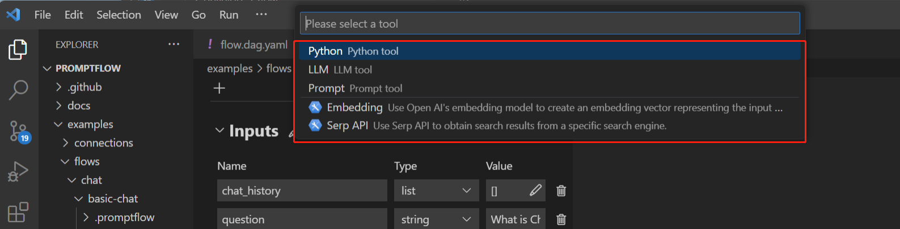

Frequency asked questions (FAQ)#
General#
Stable vs experimental#
Prompt flow provides both stable and experimental features in the same SDK.
Feature status |
Description |
|---|---|
Stable features |
Production ready |
Experimental features |
Developmental |
Troubleshooting#
Connection creation failed with StoreConnectionEncryptionKeyError#
Connection creation failed with StoreConnectionEncryptionKeyError: System keyring backend service not found in your operating system. See https://pypi.org/project/keyring/ to install requirement for different operating system, or 'pip install keyrings.alt' to use the third-party backend.
This error raised due to keyring can’t find an available backend to store keys. For example macOs Keychain and Windows Credential Locker are valid keyring backends.
To resolve this issue, install the third-party keyring backend or write your own keyring backend, for example:
pip install keyrings.alt
For more detail about keyring third-party backend, please refer to ‘Third-Party Backends’ in keyring.
Pf visualize show error: “tcgetpgrp failed: Not a tty”#
If you are using WSL, this is a known issue for webbrowser under WSL; see this issue for more information. Please try to upgrade your WSL to 22.04 or later, this issue should be resolved.
If you are still facing this issue with WSL 22.04 or later, or you are not even using WSL, please open an issue to us.
Installed tool not appearing in VSCode Extension tool list#
After installing a tool package via pip install [tool-package-name], the new tool may not immediately appear in the tool list within the VSCode Extension, as shown below:

This is often due to outdated cache. To refresh the tool list and make newly installed tools visible:
Open the VSCode Extension window.
Bring up the command palette by pressing “Ctrl+Shift+P”.
Type and select the “Developer: Reload Webviews” command.
Wait a moment for the tool list refreshing.
Reloading clears the previous cache and populates the tool list with any newly installed tools. So that the missing tools are now visible.